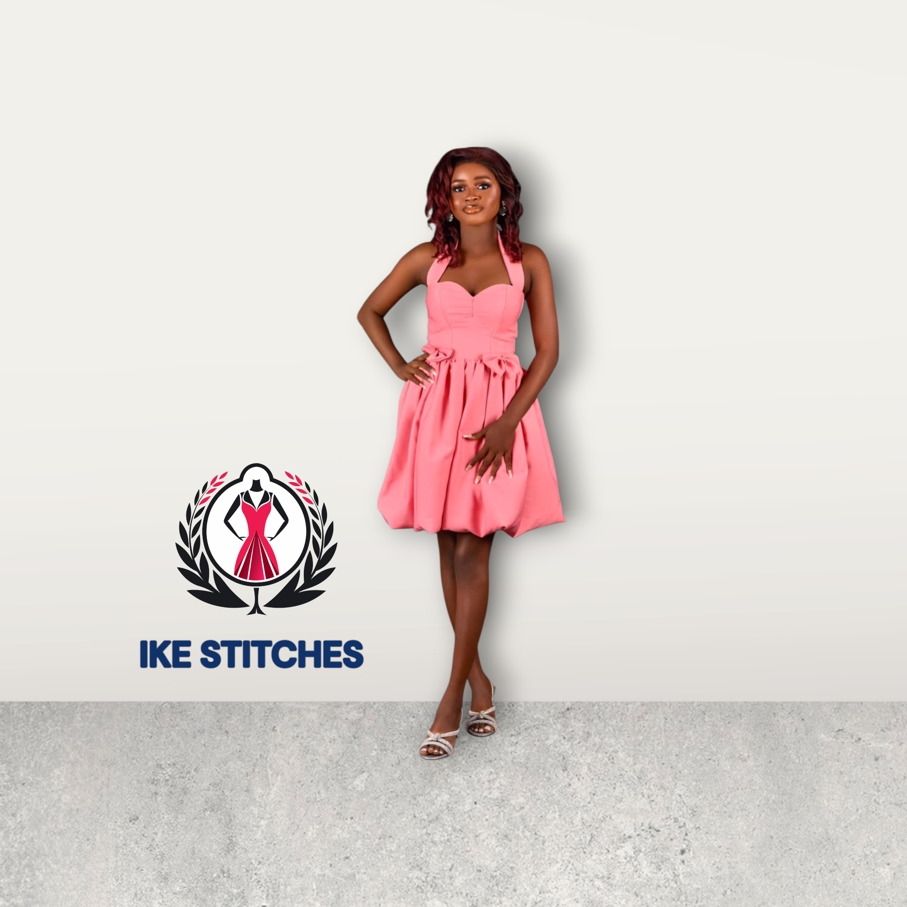
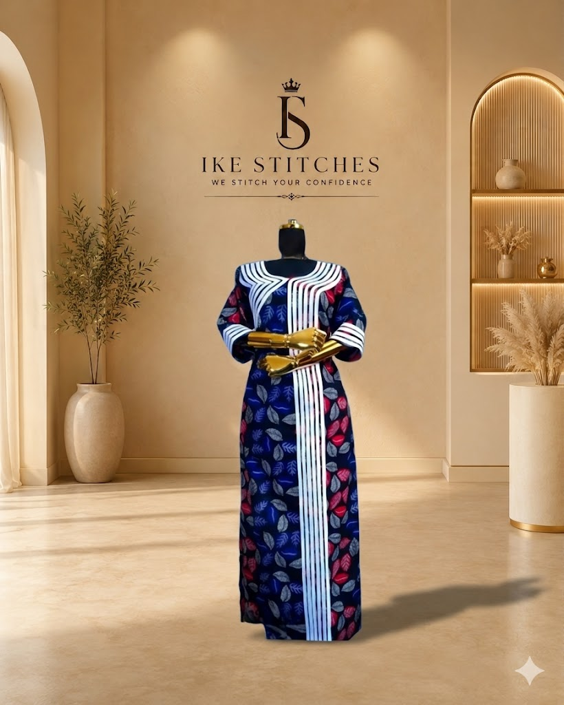
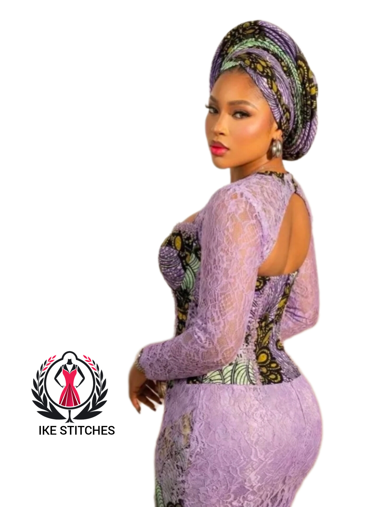
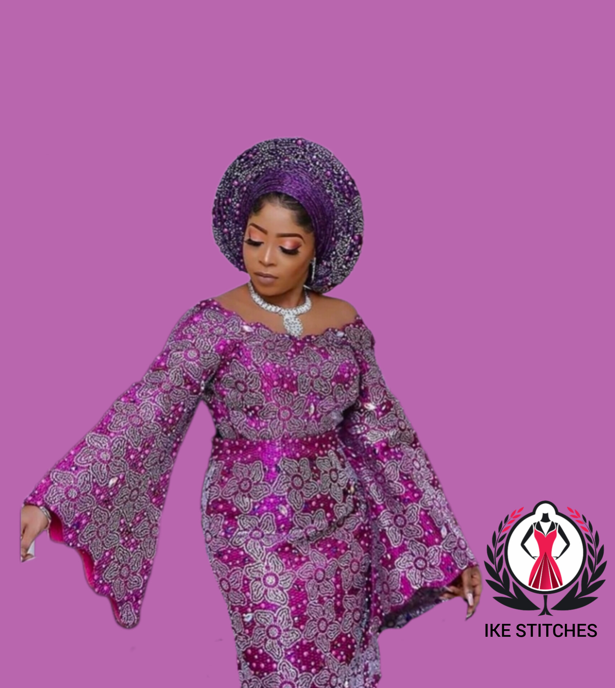
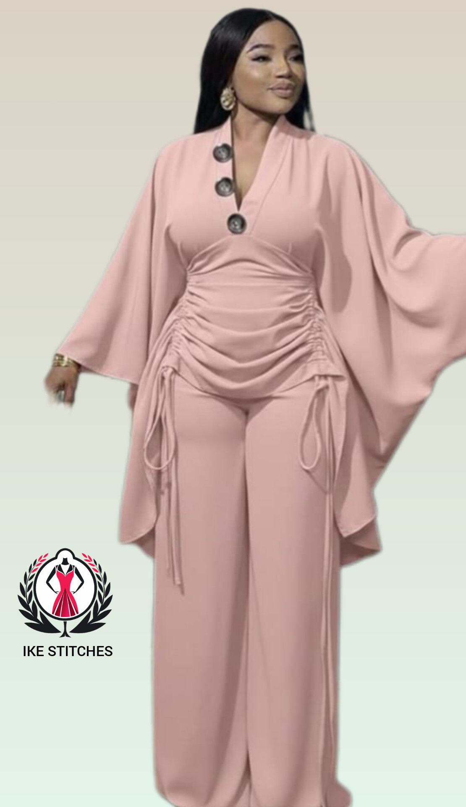
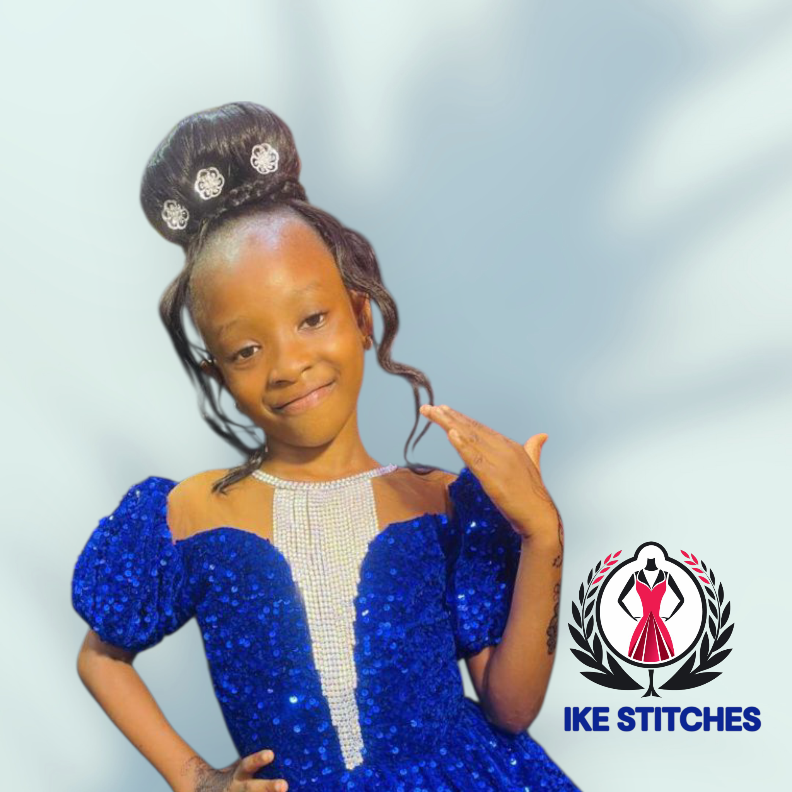

IKE-STITCHES
Luxury Fashion Blog
Luxury Fashion Blog
Explore modern Ankara trends, bridal elegance, corset styles, fashion tips and premium tailoring inspiration.
Explore Articles
Discover the newest bridal fashion, corset gowns, luxury lace combinations and elegant reception outfit ideas dominating African fashion this year.
Read Full ArticleStyle inspiration curated for modern luxury fashion lovers.

TrendingModern Ankara fashion has evolved into a symbol of luxury and elegance. From mermaid gowns to peplum designs and dramatic sleeves, discover the best Ankara wedding inspirations dominating high-class owambe events across Africa in 2026.
Read More
LuxuryLuxury corset gowns continue to dominate the African fashion scene with structured silhouettes, crystal embellishments and elegant curves. Explore the newest corset inspirations perfect for receptions, engagements and celebrity occasions.
Read More
PremiumNot every lace fabric delivers true luxury. Learn how professional designers select high-quality lace materials for bridal wear, reception gowns and classy occasion outfits without compromising comfort.
Read More
Two PieceTwo-piece outfits are becoming one of the most versatile fashion trends for stylish women. From fitted skirt sets to luxury trouser combinations, discover comfortable yet elegant outfit ideas for birthdays, casual outings and classy events.
Read More
Kids FashionElegant baby lace outfits are now a major part of modern family fashion. Explore adorable and stylish lace inspirations designed for birthdays, weddings, naming ceremonies and memorable celebrations.
Read More Bridal
Bridal
From dramatic sleeves to luxury beading and fitted silhouettes, these bridal reception gown inspirations combine elegance, confidence and modern African fashion for unforgettable wedding moments.
Read More